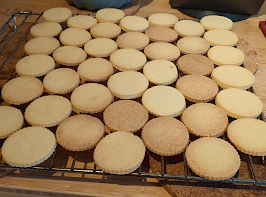

Sablés familiaux

Pour une trentaine de sablés :
- 250g de farine, et un peu plus pour étaler
- 125g de sucre
- 150g de beurre, mou de préférence
- Un œuf
- Mélanger le sucre et la farine dans un saladier.
- Couper le beurre en petits morceaux et l'incorporer avec les doigts.
- Ajouter l'œuf et pétrir la pâte jusqu'à ce qu'elle forme un tout compact. Il faut que ça soit bien compact et que ça ne colle pas, rajouter de la farine si besoin.
- Faire préchauffer le four à 180°C. Étaler la pâte sur une épaisseur d'environ un demi-centimètre sur un plan de travail fariné. La découper avec des emporte-pièces (ou un verre pas trop large), et disposer chaque sablé sur une plaque de four recouverte de papier sulfurisé. Puis, refaire une boule avec les restes de pâte, et recommencer.
- Enfourner 10-15 minutes en surveillant bien la cuisson et en sortant les sablés dès qu'ils commencent à prendre des couleurs. Les laisser refroidir d'abord sur la plaque puis sur une grille, les déguster une fois refroidis.
Retour à la liste des recettes